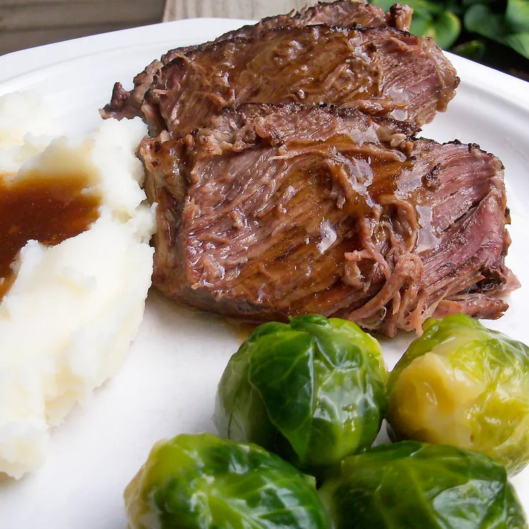

Roast Beef

Description of image
Ingredients
Excellent slow cooker roast beef with plenty of juices that can be thickened for gravy. Serve with mashed potatoes, peas, and a salad.
- ⅓ cup soy sauce
- 1 (1 ounce) package dry onion soup mix
- 3 pounds beef chuck roast
- 2 teaspoons freshly ground black pepper
Directions
- Whisk soy sauce and soup mix together in a slow cooker until well combined. Place chuck roast into the cooker; pour in water until all but the top 1/2 inch of roast is covered. Sprinkle ground pepper over top. Cover and cook on Low until meat is tender, about 22 hours.